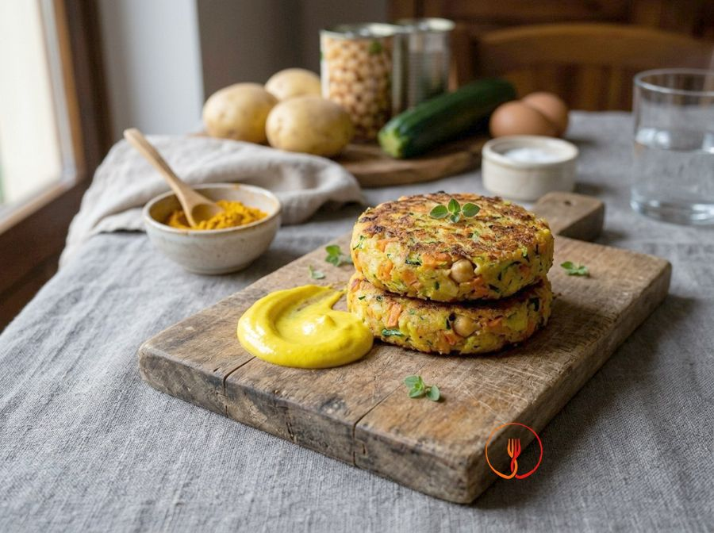

Colorful potato burger with vegan turmeric mayonnaise
It's already dinner time and I want to cook something tasty for my wife and my 2-year-old little girl; I open the pantry and here's what I came up with
Ingredients
- Cooked canned chickpeas (drained)230 g
- Medium potatoes3 pcs
- Zucchini1 pc.
- Carrots2 pcs.
- Sunflower oilto taste
- Fine saltto taste
- Turmeric powderto taste
- Eggs2 pcs.
- Lemon1 pc.
- Breadcrumbsto taste
- Extra virgin olive oil1 tablespoon
Allergens
Gluten, Eggs
May contain traces of: Mustard, Sesame, Soy.
Method
- Start by peeling the potatoes and carrots and wash them under running water together with the zucchini. Fill a large pot with cold water, add the coarsely chopped vegetables, and bring to a boil.
- Drain the chickpeas, taking care not to throw away their liquid (aquafaba), as we will need it later.
- When the potatoes are soft enough, turn off the heat, drain the potatoes, zucchini, and carrots, and let them cool slightly.
- In a large enough bowl, put the potatoes and start mashing them with a fork. Gradually add the pieces of zucchini, carrots, and chickpeas.
- When the mixture is consistent, add the eggs and start kneading. Add the breadcrumbs a little at a time so that the mixture is firm but soft.
- Preheat the fan oven to 200 degrees Celsius, form small balls and place them on a baking tray covered with oiled parchment paper, then flatten them slightly to give the shape of a burger about 1 cm thick. Add a drizzle of oil and bake for about 15/20 minutes.
- While the burgers are cooking, take the chickpea liquid and put it in a beaker for an immersion blender. Add a pinch of salt, the juice of half a lemon, turmeric to taste, and by adding the sunflower oil in a thin stream, start blending until it becomes creamy and thick like a real mayonnaise.
- When the burgers are golden and cooked, take them out of the oven and plate them with a nice dollop of vegan turmeric mayonnaise.
Chef's tips
You can replace the chickpea liquid with an unsweetened soy drink. You can also season the vegan mayonnaise with fresh chives or even with roasted pumpkin.
Nutrition facts (estimate)
| Per serving (314 g) | Per 100 g | |
|---|---|---|
| Energy | 2125 kJ / 508 kcal | 678 kJ / 162 kcal |
| Protein | 12 g | 3.7 g |
| Carbohydrates | 43 g | 14 g |
| of which sugars | 2.8 g | 0.9 g |
| Fat | 32 g | 10 g |
| of which saturates | 4.0 g | 1.3 g |
| Fibre | 7.5 g | 2.4 g |
| Salt | 1.5 g | 0.5 g |
AI estimates based on average CREA / USDA data: indicative only, not a substitute for medical or dietitian advice.
Open the recipe in the app for the shopping list, ingredient sheets and nearby shops.